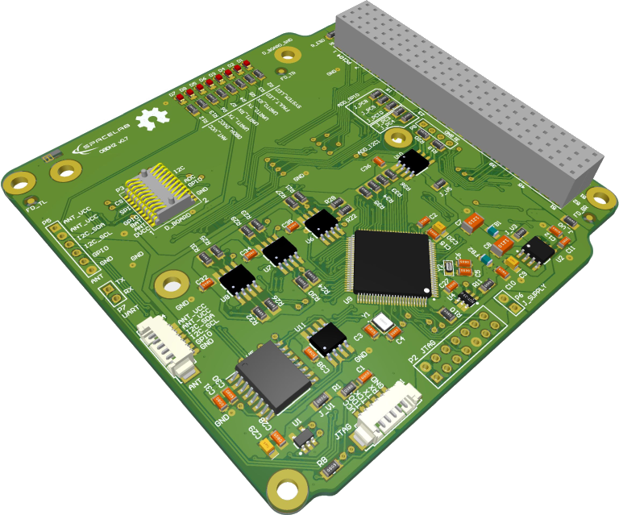

Introduction
The OBDH 2.0 is an On-Board Computer (OBC) module designed for nanosatellites. It is one of the service modules developed for the GOLDS-UFSC CubeSat Mission [1]. The module is responsible for synchronizing actions and the data flow between other modules (i.e., power module, communication module, payloads) and the Earth segment. It packs the generated data into data frames and transmits it back to Earth through a communication module or stores it on non-volatile memory for later retrieval. Commands sent from the Earth segment to the CubeSat are received by radio transceivers located in the communication module and redirected to the OBDH 2.0, which takes the appropriate action or forward the commands to the target module.
The module is a direct upgrade from the OBDH of FloripaSat-1 [2], which grants a flight heritage rating. The improvements focus on providing a cleaner and more generic implementation compared to the previous version, along with more reliability in software and hardware implementations and adaptations for the new mission requirements. The whole project, including source and documentation files, is available freely on a GitHub repository [3] under the GPLv3 license.
{kind=link}

Fig. 1 3D view of the OBDH 2.0 PCB.